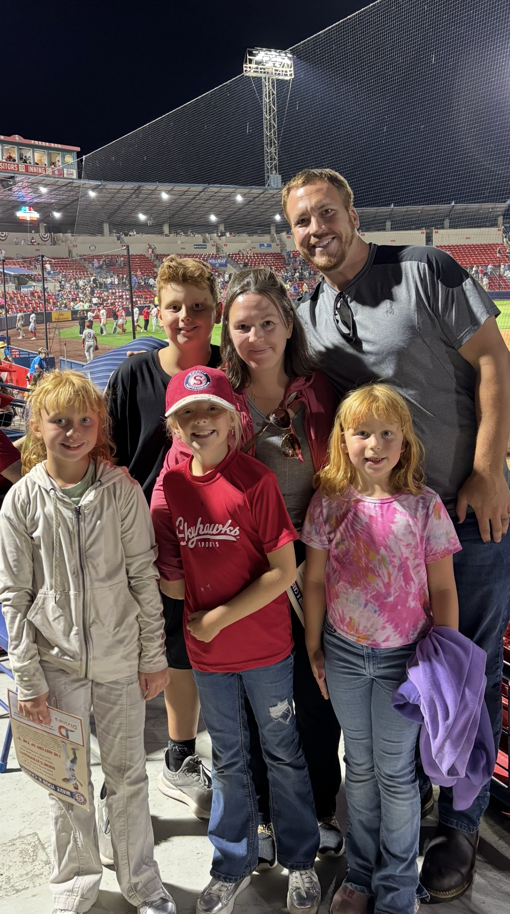
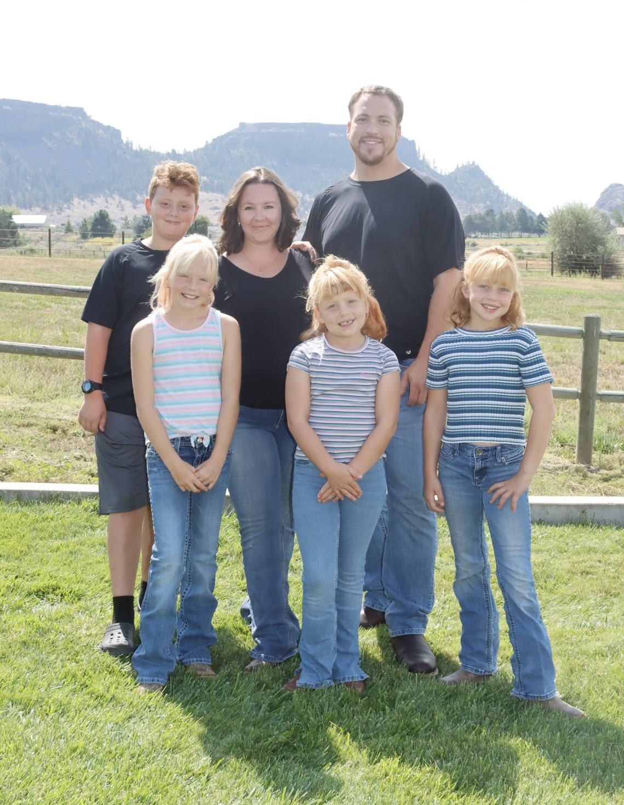
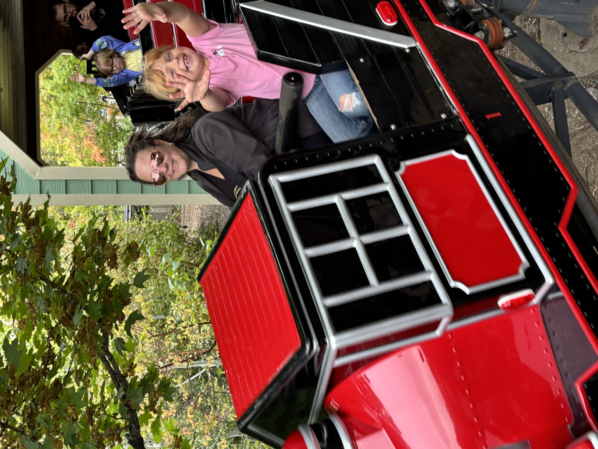

Origins & The Family Compass

Born in 1990 as the sixth of nine children, I grew up in a lower-income area of Spokane. That environment taught me the value of community, resilience, and looking out for one another. My ultimate professional aspiration is to act as a bridge, connecting underutilized institutional resources with the granular needs of our local communities.
Today, my absolute compass is my family. I live in Medical Lake, WA, with my wife, Tawnee, and our blended household of four incredible children. Every complex project I undertake—from environmental recovery to institutional architecture—is driven by a personal motivation to show them that structural community problems can be solved.
Technical Translation & Systems Optimization

My early career was forged in the rigorous environment of STEM program architecture. Armed with a B.A. in Chemistry, I directed Chemistry, Robotics, and Science programs across five districts for over six years. My focus was never just instruction; it was systems optimization. I actively implemented digital platforms and AI-enhanced tools to maximize operational efficiency and scale technical learning.
Today, I have pivoted completely into macro-level leadership and industrial project management. However, the ability to dissect complex scientific data—such as high-temperature electrothermal physics—and translate it into actionable strategies is the exact skillset I utilize to build robust coalitions between academics, municipal planners, and industry vendors.
Strategic Leadership & Advocacy

My transition into institutional leadership is driven by a mandate to scale impact. This drive led me to earn my M.S. in Management and Leadership, and I am currently completing my Doctorate in Strategic Leadership (DSL).
Whether I am utilizing Lean management principles to refine workplace operations or leading the Advanced Recovery Coalition to solve municipal waste crises, my methodology remains the same: prioritize objective truth, optimize complex systems for efficiency and safety, and ensure that every organizational action yields measurable results.